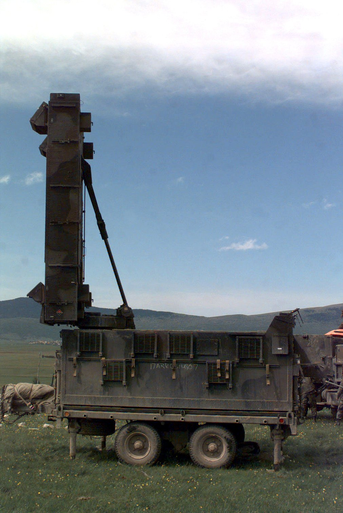

연구 과제 포탄 시뮬레이터기간2013발주처·지원기관(주)미래시스템포탄 궤적 추적 레이더 예(AN/TPQ-37) — Wikimedia Commons, 미 육군 (Public domain)출처구 연구실 홈페이지 / 연구실-수행-과제ntis.go.kr / ThSearchProjectList.dontis.go.kr / ThSearchProjectList.do ← 연구 과제 목록으로